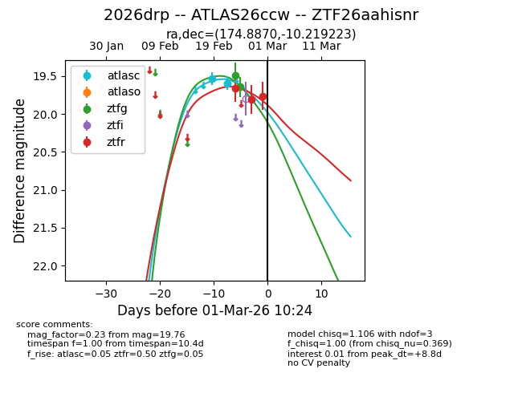
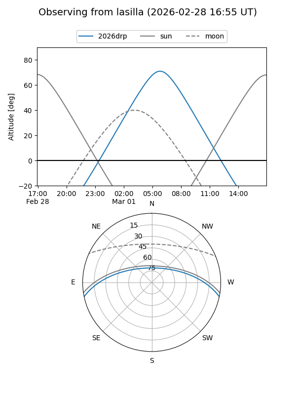
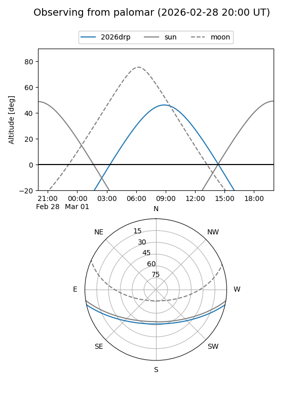
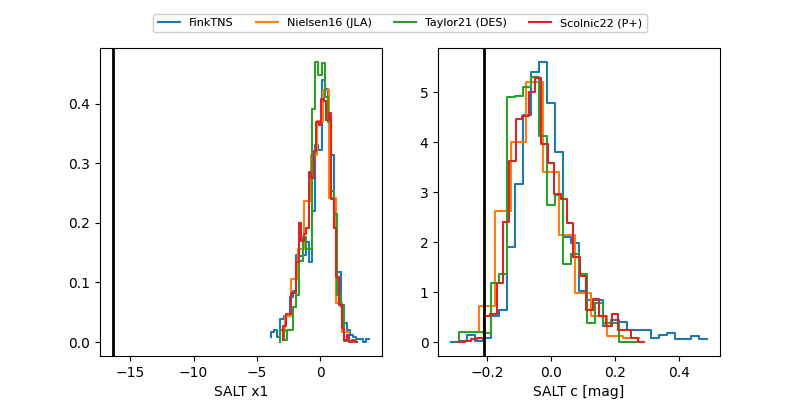

2026drp
Target 2026drp at 2026-03-01 10:25
Aliases and brokers:
FINK: link
Lasair: link
ALeRCE: link
TNS: link
YSE: link
alt names
ZTF26aahisnr (ztf,fink_ztf)
2026drp (tns,yse)
ATLAS26ccw (atlas)
Coordinates:
equatorial (ra, dec) = 174.8870,-10.21922
equatorial (HMS+DMS) = 11:39:32.88,-10:13:09.20
galactic (l, b) = (275.4887,+48.78416)
Flags:
Photometry:
last atlasc=19.59, ztfg=19.64, ztfr=19.76
2 atlasc, 2 ztfg, 3 ztfr detections
Lightcurve

Visibility


Additional plots
